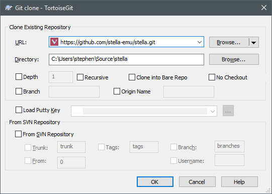
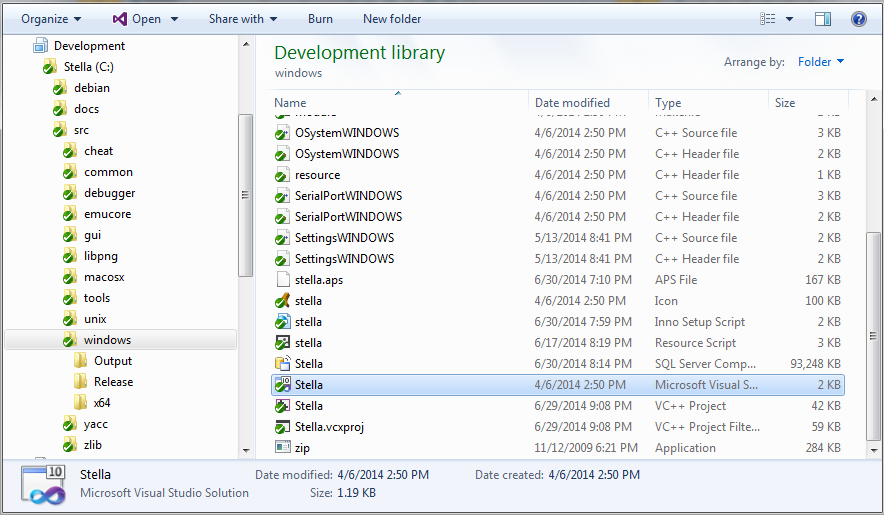

The Stella project always welcomes new developers, either on a full-time basis or just to fix your favorite bug. Feel free to email Stephen Anthony if you wish to contribute in any way to the Stella project.
The first major hurdle for new developers is setting up a build environment, checking out the code, and in general actually compiling the project for the first time. The following is a description of how to do this for the three major platforms.
Linux/UNIX
Getting the required tools:
Stella needs g++ v/7 or Clang++ v/5 (with up-to-date C++17 support), make and SDL2 development libraries installed. ZLib and PNG libraries are optional; Stella will use built-in versions if none are installed system-wide. These packages are likely available through your distribution repository. Consult your specific distribution for an explanation of installing new packages.
Other packages may be needed depending on the distribution you use. The best thing to do is try the compile, note any missing packages, and then install them through your distribution repository.
Downloading the source code:
The source for the latest release can always be found under "Stable Releases" on the main webpage. However, you'd be better off working with the most recent code, located in the GitHub repository. The following command will checkout this code:
git clone https://github.com/stella-emu/stella.gitThis will checkout from the master branch for local modifications. Please see below for instructions on how to contribute changes back to Stella.
Note: You may be more familiar with graphical Git clients; these will work fine as well.
Compiling the source code:
- Generic build — When testing changes or creating personal builds, it's best to use
the generic configure/make cycle:
cd 'location of stella source code' ./configure (--help for list of options) make make install (if you want to install locally)
Debian-based distributions:
cd 'location of stella source code' dpkg-buildpackageRPM-based distributions:
cd 'location of stella source code'/src/unix rpmbuild -ba stella.spec
- Generic build — When testing changes or creating personal builds, it's best to use
the generic configure/make cycle:
Contributing
If you'd like to contribute to Stella, create a fork of the repository on github and make your changes there. After you are done, place a pull request against the Stella repository. This process is described in detail in the github docs.
If you do not want to create a github account, you can also create a diff of your changes using
git diffand send it to the email address above. Please check out the git documentation on how to select particular commits for diffing.Before you start modifying code, it's best to update your local copy of the source code (so that you can see changes that others have made). To do this, use the following command:
git pull
Apple macOS
Getting the required tools:
Stella needs Xcode 8 for compilation. You will also need the SDL2 development libraries, located at libsdl.org. You will need to download SDL2-2.0.8.dmg (or newer, if available).
Downloading the source code:
The source for the latest release can always be found under "Stable Releases" on the main webpage. However, you'd be better off working with the most recent code, located in the GitHub repository. The following command will checkout this code:
git clone https://github.com/stella-emu/stella.gitThis will checkout from the master branch for local modifications. Please see below for instructions on how to contribute changes back to Stella.
Note: You may be more familiar with graphical Git clients; these will work fine as well.
Compiling the source code:
- The Xcode project is located at src/macos/stella.xcodeproj and is for 64-bit Intel-only machines running 10.7 or greater.
Place the SDL.framework bundle (located in the SDL2 dmg file you downloaded earlier) into the /Library/Frameworks directory.
Open the project file using Xcode 8.
Build the project by pressing Cmd-b, and run by pressing Cmd-r.
Optional: creating a DMG for release:
cd 'location of stella source code'/src/macos ./Create_build.sh 'version #'This will create a DMG installation archive on your desktop.
The Stella.app bundle can be copied to your Applications folder, or wherever you like on your system.
Contributing
If you'd like to contribute to Stella, create a fork of the repository on github and make your changes there. After you are done, place a pull request against the Stella repository. This process is described in detail in the github docs.
If you do not want to create a github account, you can also create a diff of your changes using
git diffand send it to the email address above. Please check out the git documentation on how to select particular commits for diffing.Before you start modifying code, it's best to update your local copy of the source code (so that you can see changes that others have made). To do this, use the following command:
git pull
Windows 7/8/10
Getting the required tools:
Stella needs Visual Studio C++ 2019. You will also need the SDL2 development libraries, located at libsdl.org. The version you want will be named SDL2-devel-2.0.x-VC.zip (where 'x' is dependent on the version); download the latest version.
You will also need a Git client; the following assumes you are using TortoiseGit.
Downloading the source code:
The source for the latest release can always be found under "Stable Releases" on the main webpage. However, you'd be better off working with the most recent code, located in the GitHub repository. To checkout this code, you will need to install TortoiseGit, which you downloaded above.
Once TortoiseGit is installed, you should right-click somewhere in Windows Explorer where you wish to download the files, right-click and select Git Clone... This will produce a window as follows:

The URL of repository must be the same, but the Checkout directory will be specific to your system.
This will checkout from the master branch for local modifications. Please see below for instructions on how to contribute changes back to Stella.
Compiling the source code:
Before compiling the code for the first time, you must set up your environment such that Visual Studio can find the SDL development files:
Open the folder REPO_DIR\src\windows, similar to the following:

Unzip the SDL2-devel-2.0.x-VC.zip file you downloaded above into this folder. This will create a folder named SDL2-2.0.x (where 'x' depends on the version you downloaded), which should contain, among other things, folders named 'include' and 'lib'.
Rename this folder to 'SDL'. In the end, you must have a folder named SDL in src\windows, and the folder must contain 'include' and 'lib' folders as well.
Open the Visual Studio project file (Stella.vcxproj) and build the project; it should run to completion, perhaps with some warnings.
If you try to run at this point, it will probably complain that it can't find SDL2.dll. Manually copy this file from the SDL folder to one of the following locations:
For the 32-bit version, you have to copy SDL\lib\x86\SDL2.dll into the Win32\Release and Win32\Debug folders. For the 64-bit version, you have to copy SDL\lib\x64\SDL2.dll into the x64\Release and x64\Debug folders.
- You may also get an error that the libraries msvcp140.dll and/or msvcr140.dll are not available. If so, you will need to download them from Visual C++ Redistributable Packages for Visual Studio 2017
Contributing
If you'd like to contribute to Stella, create a fork of the repository on github and make your changes there. After you are done, place a pull request against the stella repository. This process is described in detail in the github docs.
If you do not want to create a github account, you can also create a diff of your changes and send it to the email address above. To do this, right-click on the local repository directory and select TortoiseGit -> Create Patch Serial...
Before you start modifying code, it's best to update your local copy of the source code (so that you can see changes that others have made). To do this, right-click on the local repository directory and select TortoiseGit -> Pull...